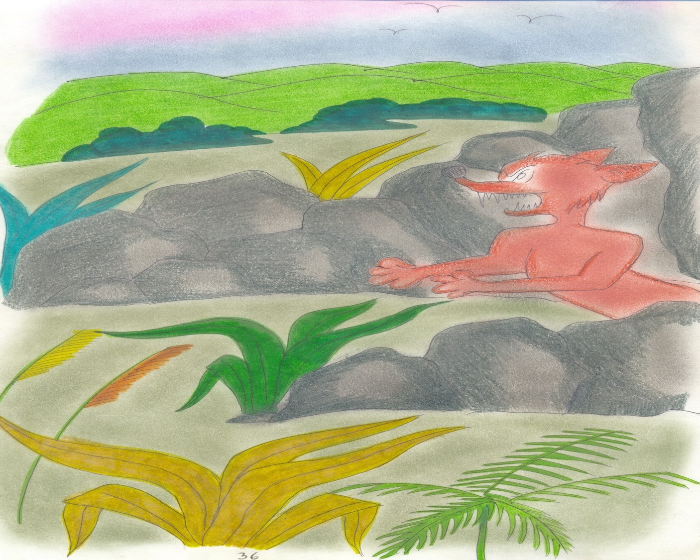
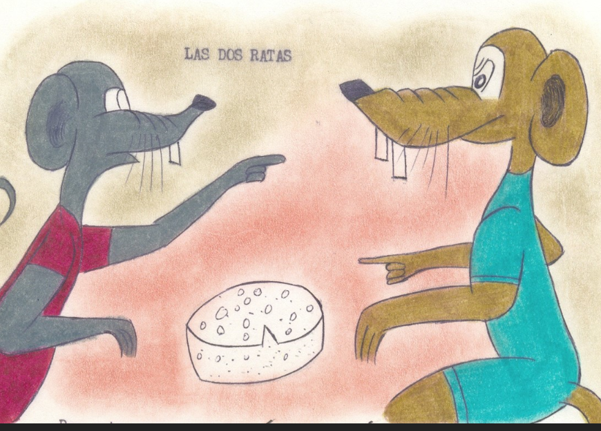
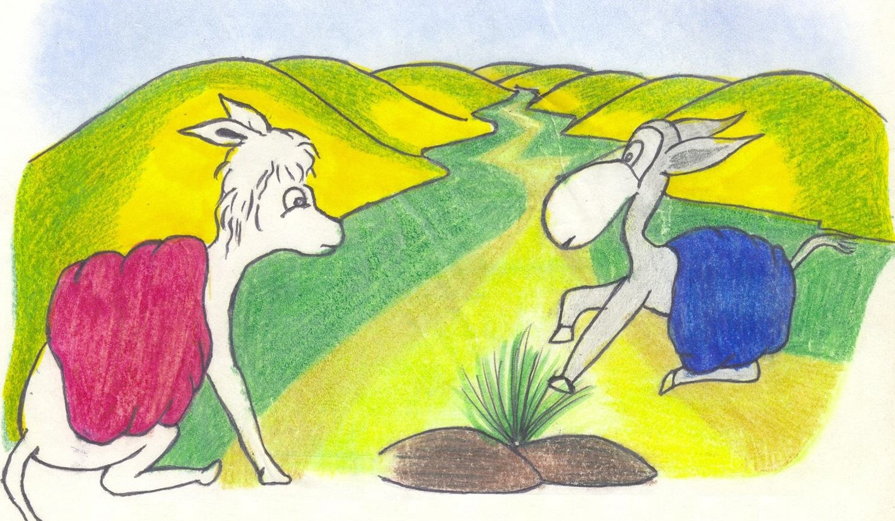
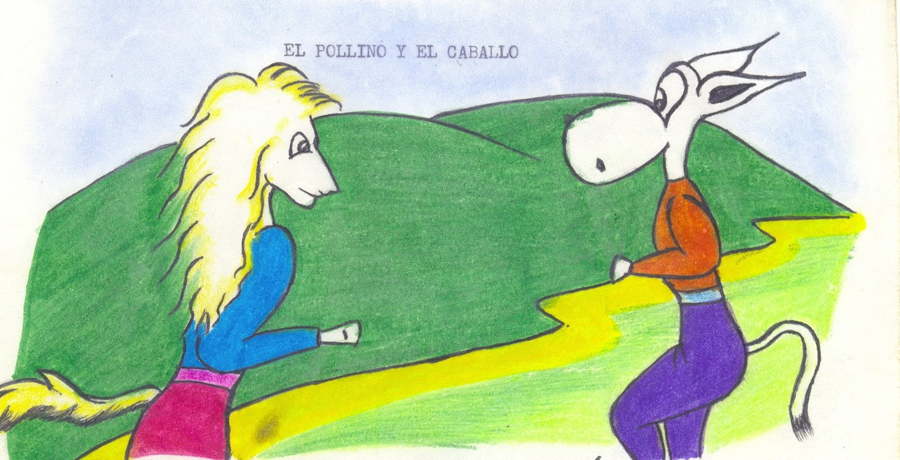
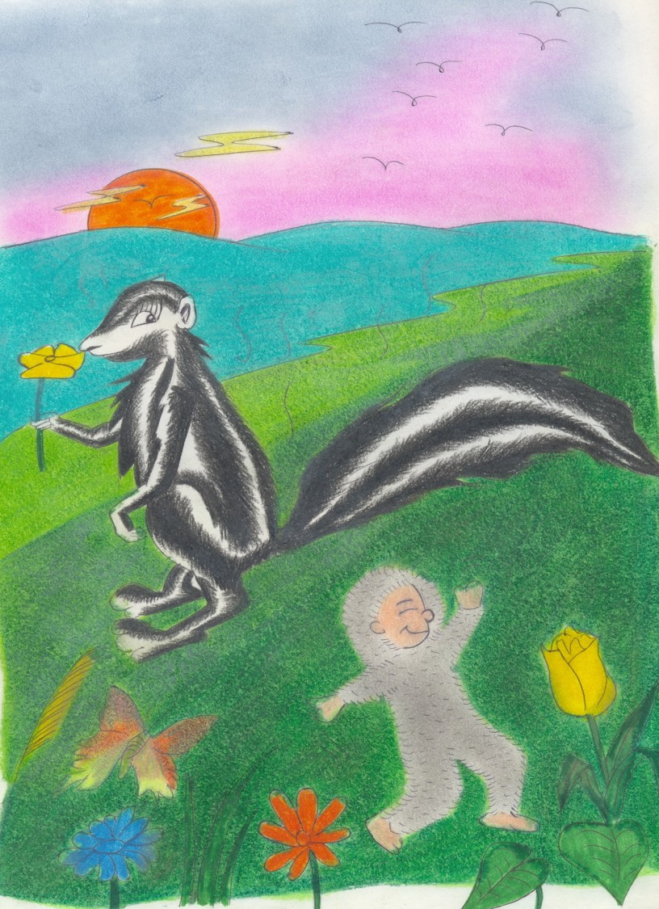

Desde el aprisco , unos perros,
¡los más bravos! , por los cerros
perseguían al puma más temible ,
liderados por Nerón el terrible .
Por el camino se rezagaban
algunos canes cansados
de tanto correr , debilitados ,
ya ni jugaban , ni ladraban.
Nerón el bravucón , quien iba adelante,
sin mirar atrás ni un instante ,
rabioso ladraba , más que nunca , desafiante .
Cerca de un collado , el puma se detiene,
mira atrás Nerón y ni un perro viene ,
entonces se esfuma el valor que tiene .
Comprendiendo que se hallaba
solo , frente a frente
a la más sanguinaria fiera , humildemente
se arrima - ¿ Luchar conmigo , hoy querías? –
le interroga el adalid airado –
Ataca ahora , es el momento esperado
en que me has de mostrar tu bizarría ,
vigor y canina osadía ,
tú que con tanto ardor me perseguías –
El campeón de canes , temblando
de miedo , más no por el frío de la altura,
ya ni ladraba , ni respiraba con soltura .
-Solamente te seguía persistente ,
para avisarte un recado , gentilmente –
-Habla desdichado ¿Qué deseas?.
Dime ahora o si no maldito seas -
El can , temiendo ser difunto ,
le contesta sumisamente :
-Que te lleves a un carnero solamente –
Moraleja:
“ASI EN MEDIO DE BRAVUCONES ,
HAY UNO QUE ES EL MAS VALIENTE
¿PERO SOLOS? PIDEN MIL PERDONES
Y CLEMENCIA HUMILDEMENTE” .
El zorro rojo y el perdiz

Oculto entre las rocas,
un zorro acechaba
a una perdiz que incubaba
entre las hojas secas.
-Vigilaré desde la escarpada
y cuando pase la temporada,
hincaré el colmillo desde la cola al pico-
se decía relamiéndose el hocico –
Cuando rompan los cascarones ,
devoraré a los pichones ,
más vale varios , que uno ,
para mi uno es como ninguno –
Estando la perdiz , vigilada
por la zorra , pasó la temporada
en que salieron los pichones,
rompiendo los cascarones.
Descendiendo del cerro ,
la oportunidad esperada , vio el zorro,
de atrapar a cada quien , desprevenido,
pero pensó aún no profanar el nido .
-Los pichones son muy tiernos –
se decía – solo son huesos y pellejos .
Dejaré que engorden con los mimos maternos
y crezcan carnosos y parejos .
Serán entonces más que huesitos ,
jugosos y exquisitos . –
La perdiz ignoraba
la acechanza del zorro,
pero por un abejorro,
del peligro avisada , se prepara
para huir con la familia entera .
Entonces el zorro decidió cazarlos ,
pero los pichones ya habían crecido .
Cada quien ante el ataque , prevenido ,
voló hasta perderse por los cielos .
Moraleja:
“NO CONFUNDIR LA INDECISIÓN
Y LA AMBICION , CON LA PACIENCIA ,
VIRTUD QUE MUCHO VALE”.
Las dos ratas

Dos ratas en un desván vivían,
como siempre , andar juntas solían ,
en un armario , un queso encontraron
y ahí a uña y diente se agarraron.
Era una avara y ambiciosa,
y la otra , desconfiada y tramposa.
El motivo era que cada quien quería
gozar de la mayor parte que apetecía.
Como no cedía ninguna ,
acaloradamente discutían :
- Yo fui – decía una –
el quien te animó a este viaje,
por ello reclamo el mayor potaje.
-Yo fui – decía el otro – que por travieso,
el quien primero vio el queso,
la mayor parte reclamo con derecho . –
Estando un gato en el techo,
por el ruido atraído ,
devoró a cada quien por distraído.
Por la ambición y la avaricia ,
perdieron rabo , queso y vida .
Moraleja:
“LOS AMBICIOSOS Y AVAROS
ASI MAL TERMINAN”
La mula y el burro

Tras cruzar áspera montañas ,
se encontraron en un camino
lleno de malezas y cizañas ,
una mula y un pollino.
La mula provenía de la mina más lejana
e iba cargada de oro
y el jumento , de la chacra más cercana ,
con verduras como único tesoro .
La mula le dice al pollino :
-Feliz estoy de mi destino .
Preciosa carga llevo día a día.
Los mendigos de mi sentirán envidia
y entre aquellos que la vida les es amarga,
por mi riqueza seré respetada y venerada .
Lo que transportas aquella carga,
en valor comparado al mío , no es nada . –
-Es cierto – contestó el asno –
Pero no eres tú , el que goza
de lo que llevas , si no tu amo ,
que no de coles ni de durazno ,
alfalfas o de calabazas ,
te alimenta , sino de tamo,
pajas o de afrecho .
Conocidos son por su avaricia ,
menos dan cuanto más tienen ,
en cambio yo devoro de trecho en trecho ,
algunos choclos que a distancia ,
unos tras otro , ruedan,
para que a mi panza llenen,
recompensando en algo mi trabajo –
Moraleja:
“POR MAS QUE TRABAJES ,
SI ERES EXPLOTADO , SERAS MENDIGO,
MAS POBRE A MAS TRABAJO , YO LO DIGO,
A PAN Y AGUA O HASTA QUE EL HAMBRE
TE MATE Y OTRO A COSTA TUYA ,
SERA EL MAGNATE” .
El pollino y el caballo

Un caballo orgulloso ,
envanecido de su oficio ,
trotaba aún más donoso ,
como haciendo ejercicio
y así decía a un pollino
que encontró en el camino :
-Por mi bello crin , no soy jocoso,
pero reconozco que soy corcel brioso ,
símbolo de la elegancia .
Por mi estilo y gracia ,
soy digno , sin tardanza,
de la más loada alabanza
Sobre mi , reyes cabalgan,
orgullosos príncipes galopan ,
delicadas doncellas
y princesas bellas ,
vestidas de tules y de galas .
A ti te montan , labriegos y zagalas .
¡Mísero de ti , que humildemente ,
llevas cosechas solamente!
Es tu trabajo de los que existen,
el más humilde , como tú no me rebajo –
El jumento que le escuchaba cabizbajo,
le contesta en rebuznos a su arrogancia :
- Es cierto que eres sinónimo de elegancia
y por ello los monarcas te prefieren.
¡Hay de los que así , el cielo quieren!.
A la virgen María ¿ quién llevó en su lomo,
hacia Belén y Egipto, sino un pollino plomo?
¿ y sobre quién montó Jesús el Nazareno,
cuando fue a Jerusalén , más triste que sereno? –
Moraleja:
“EL PECADO QUE DIOS MAS ABORRECE
ES EL ORGULLO Y LA PREPOTENCIA
Y A LOS QUE SON HUMILDES LES OFRECE
EN EL JUICIO , LA REAL CLEMENCIA” .
Dios, el zorrillo y el puerco espín

Ante Dios acudieron,
un zorrillo y un puerco espín llamado Erizo.
Amargas quejas dieron :
-¿ Por qué tan repugnantes se nos hizo?-
De su espantoso olor , renegaba
el zorrillo y el Erizo reclamaba ,
se le quiten las espinas y así se hizo .
Salieron de la divina providencia ,
con el deseo concedido .
¡Qué olor a violeta , qué fragancia!
El zorrillo por lo Alto ungido
con el perfume de las flores ,
por el bosque , saltaba y corría ,
rebozando de alegría ,
con el Erizo que lucía
a su donoso andar ,
la piel más delicada .
Los animales del bosque,
ya no le marginaban de sus juegos .
Corrían , saltaban , ya en manada o bandada,
hasta que atacaron dos otorongos
y cada quien huye en desbandada.
Cada garza vuela y a saltos,
cada venado se alejaba,
mientras la tortuga en su caparazón, se ocultaba.
Las fieras , al Erizo y al zorrillo , van persiguiendo,
ya que sin púas , el primero y el segundo , oliendo
a perfume de flores , cual mil locuras ,
no eran más que inofensivas criaturas .
Zorrillo y Erizo , huyen desconcertados,
más por la gracia salvadora del Dios clemente ,
una grieta descubren entre las rocas , felizmente ,
salvando sus vidas y así no ser despedazados .
Ante el trono de Dios , acuden reverentes ,
cabizbajos , humillados y de fe carentes
de obtener la divina indulgencia ,
que no es más que la real clemencia .
En penitencia , sus pecados van purgando
y el castigo merecido , esperando.
La injuria y la insolencia , perdonando ,
va el Dios , su pedido concediendo
al zorrillo , la exótica fragancia,
la belleza otorgada y la elegancia ,
sin decir palabra , va quitando
y al puerco espín , sus horribles púas ,
entre truenos , en segundos , devolviendo .
Tras agónica mirada , al ir saliendo,
el puerco espín , entre susurros va diciendo :
Moraleja:
“ – NADIE OBJETE A LA DIVINA PROVIDENCIA,
NI RENIEGUE EL ASPECTO DE SU PRESENCIA .
CADA QUIEN SE CONTENTE POR CONTADO,
CON EL ATRIBUTO SABIAMENTE OTORGADO.”